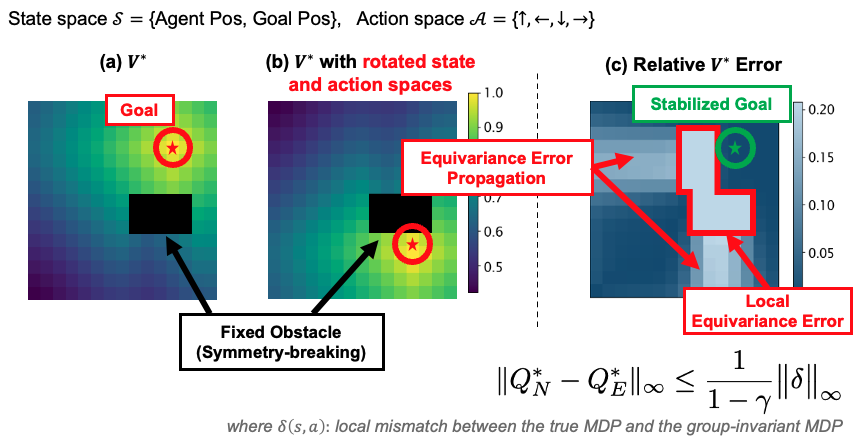
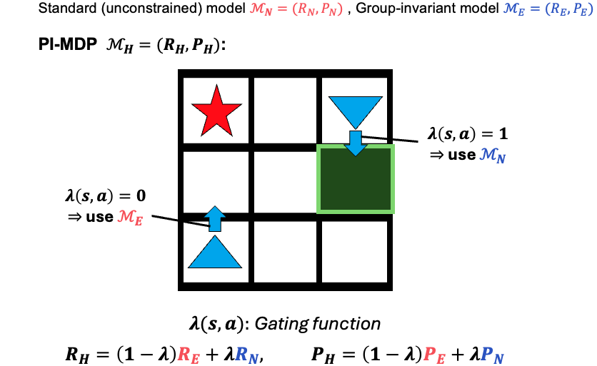
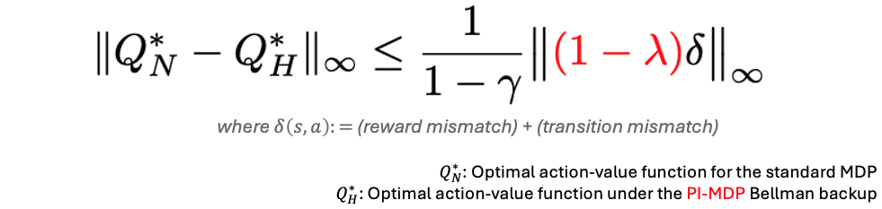
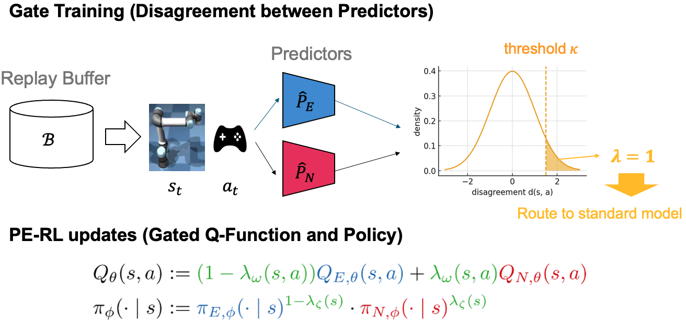
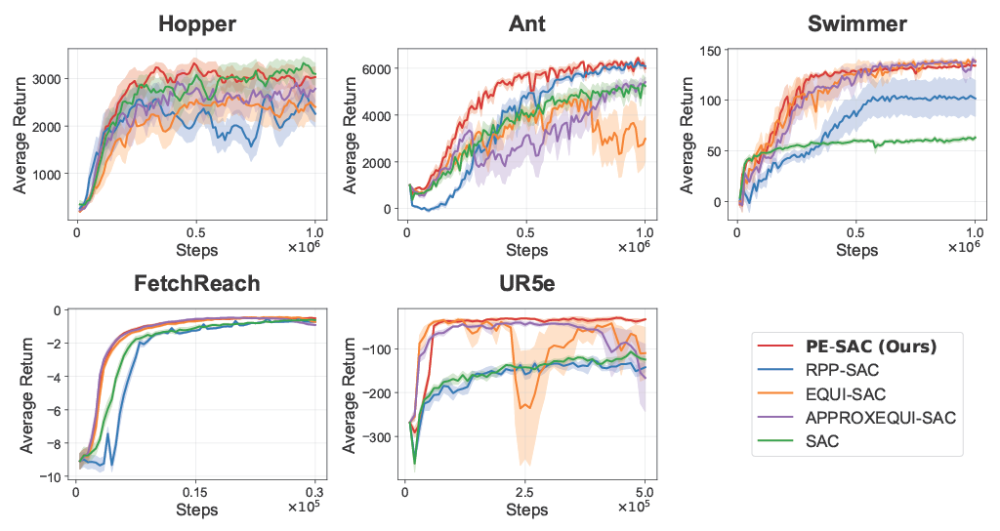

TL;DR: By selectively applying equivariance, PE-RL maintains sample efficiency while remaining robust to symmetry-breaking!
Group symmetries provide a powerful inductive bias for reinforcement learning (RL), enabling efficient generalization across symmetric states and actions via group-invariant Markov Decision Processes (MDPs). However, real-world environments rarely realize fully group-invariant MDPs; dynamics, actuation limits, and reward design usually break symmetries, often only locally. Under group-invariant Bellman backups for such cases, local symmetry-breaking introduces errors that propagate across the entire state-action space, resulting in global value estimation errors. To address this, we introduce Partially Group-Invariant MDP (PI-MDP), which selectively applies group-invariant or standard Bellman backups depending on where symmetry holds. This framework mitigates error propagation from locally broken symmetries while maintaining the benefits of equivariance, thereby enhancing sample efficiency and generalizability. Building on this framework, we present practical RL algorithms - Partially Equivariant (PE)-DQN for discrete control and PE-SAC for continuous control - that combine the benefits of equivariance with robustness to symmetry-breaking. Experiments across grid world, locomotion, and manipulation benchmarks show that PE-DQN and PE-SAC significantly outperform baselines, highlighting the importance of selective symmetry exploitation for robust and sample-efficient RL.





The videos below demonstrate how the learned gate responds to local symmetry-breaking. The background color and the moving circle indicate the predicted gate probability $\Pr(\lambda=1 \mid s,a)$. Green ($\lambda \approx 0$) indicates the equivariant approximation is reliable, while Red ($\lambda \approx 1$) indicates local symmetry-breaking, triggering a switch to the standard model.
Task: The robot arm aligns its end-effector with a target SE(3) pose, exhibiting an approximate SO(3) symmetry around the workspace center.
What to look for: Notice how the gate increases (turns red) near configurations where joint limits and kinematic singularities locally violate this assumed symmetry.
Task: Moving forward safely. The leg configuration exhibits an approximate 90° rotational symmetry.
What to look for: The gate increases (turns red) when contact-driven dynamics, friction, or joint limits make the equivariant approximation unreliable.
@inproceedings{
chang2026partially,
title={Partially Equivariant Reinforcement Learning in Symmetry-Breaking Environments},
author={Junwoo Chang and Minwoo Park and Joohwan Seo and Roberto Horowitz and Jongmin Lee and Jongeun Choi},
booktitle={International Conference on Learning Representations},
year={2026},
url={https://openreview.net/forum?id=dRDcVyobhH}
}